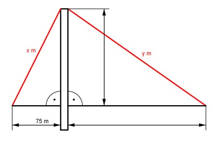

Pythagoras Aufgabe 16 Berechnen Sie von der Hängebrücke die Längen x und y der beiden Spannseile in m.  x² = 75² m² + 95² m² = 14 650 m² |√ x = 14 650 m² = 121 m y² = 95² m² + 450² m² = 211 525 m² |√ y = 211 525 m² = 459,9 m